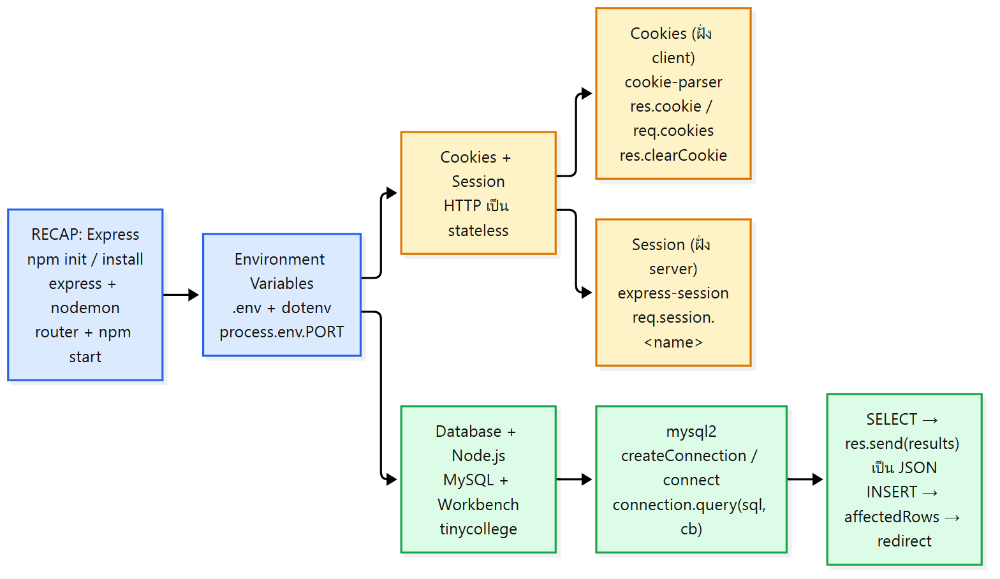
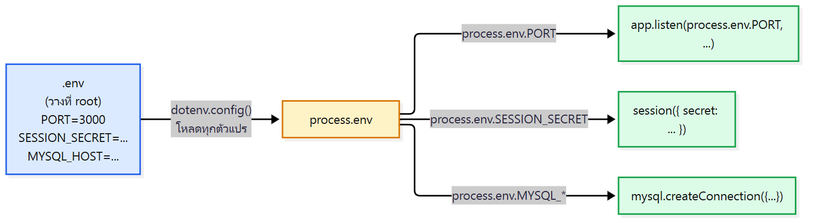
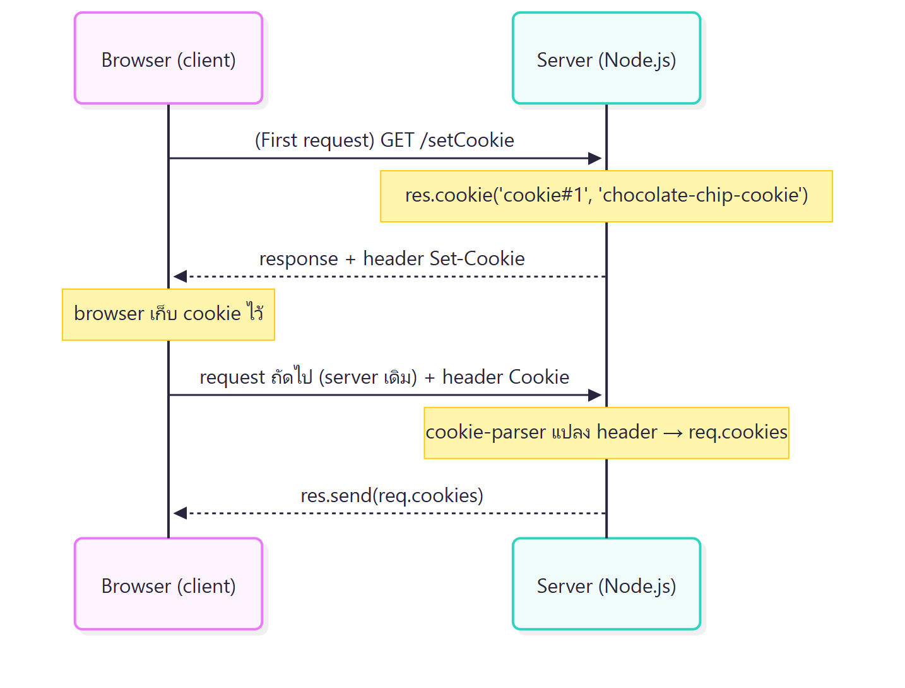
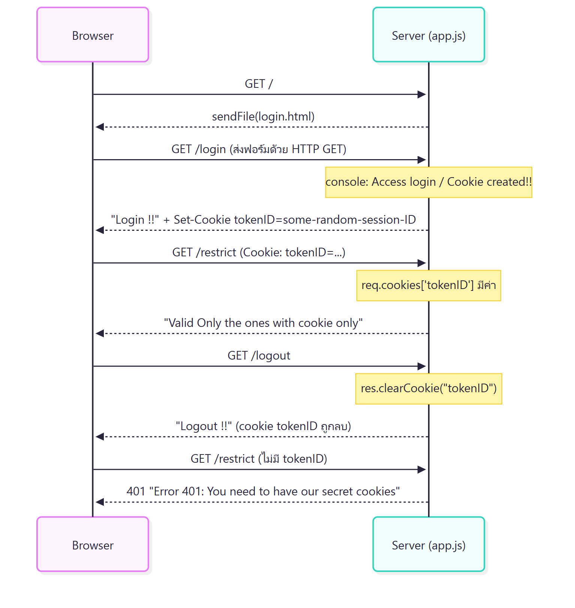
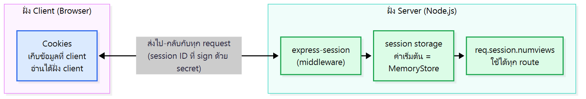
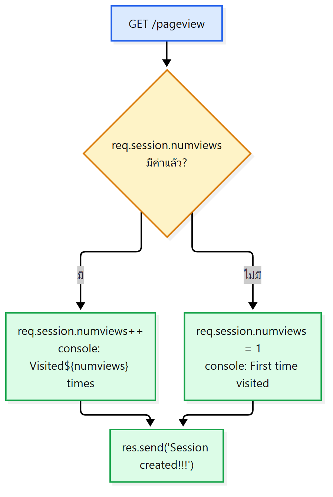
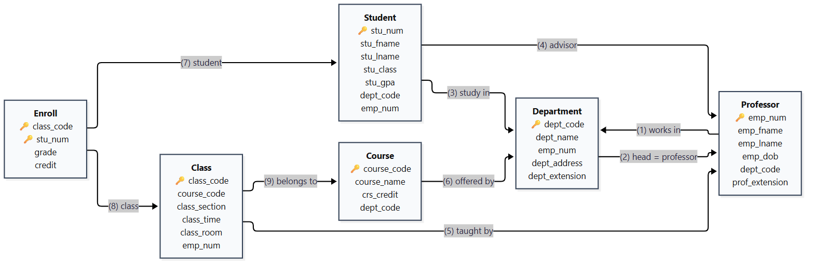
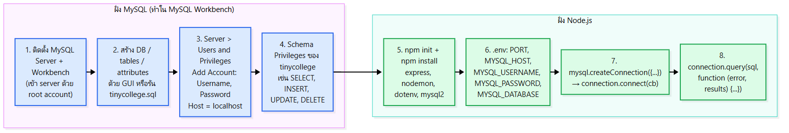
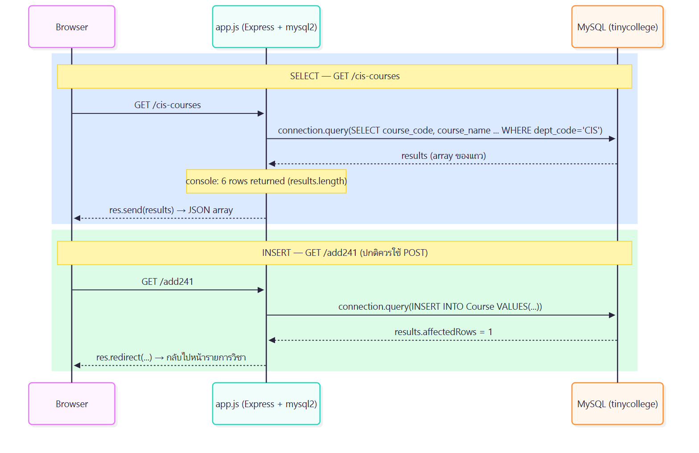

ภาพรวมบทนี้: บทสุดท้ายของ Node.js Unit ต่อจาก Express (L10) เริ่มจาก ทบทวน การตั้งโปรเจกต์ด้วย npm และ routing แล้วเรียน 3 เรื่องใหม่: Environment Variables (เก็บค่าตั้งค่าไว้ในไฟล์
.envแล้วอ่านผ่านprocess.envด้วยdotenv), Cookies + Session (HTTP เป็น stateless จึงต้องมีที่เก็บข้อมูลข้าม request: cookie เก็บที่ client, session เก็บที่ server) และ Database + Node.js (ต่อ MySQL ด้วยmysql2แล้วรัน SELECT / INSERT)บทนี้ไม่มีโจทย์คำนวณ แต่มี โค้ด Node.js/Express หลายชุด ส่วน cookie, session และ dotenv รันจริงแล้ว ด้วย Node v22.16.0 + express 5.3.0, cookie-parser 1.4.7, express-session 1.19.0, dotenv 18.0.10 ส่วน database ไม่ได้ต่อ MySQL จริง (ไม่มีฐาน tinycollege กับ user สำหรับทดสอบ) จึงใช้ connection จำลองตรวจเฉพาะฝั่ง Express และอธิบายผลที่เหลือตามสไลด์

0. บทนี้อยู่ตรงไหนของ Node.js Unit และเรียนอะไร?
แก่นNode.js Unit มี 3 ส่วน บทนี้คือ Part III (Cookies, Session, Database) เป้าหมายคือสร้าง cookie/session ได้ และต่อ Node.js กับ relational database ได้
Node.js Unit (สไลด์ 2):
| ส่วน | เนื้อหา |
|---|---|
| Part I – Intro Node.js | Getting Started + "Hello World", Node Module System, Build your first server |
| Part II – Express Framework | (L10) |
| Part III – Cookies, Session, and Database | ← บทนี้ |
Course Objective (สไลด์ 3) — หลังเรียนควรทำได้:
- สร้าง cookies และ sessions ด้วย Node.js
- เชื่อม Node.js กับ relational database
Outline (สไลด์ 4): RECAP: Express Framework → Environmental Variables → Cookies + Session → Database + Node.js
1. RECAP: Express คืออะไร?
แก่นExpress คือ Node.js web application framework ที่ minimal และ flexible ช่วยเรื่อง routing, สร้าง API และใช้กับ template engine (Pug, EJS)
(สไลด์ 5 "RECAP: Node.js" และสไลด์ 6 "Express Framework" เป็นหน้าคั่นหัวข้อ ไม่มีเนื้อหา)
- Express = a minimal and flexible Node.js web application framework that provides a robust set of features for web and mobile applications
- ช่วยเรื่อง routing (กำหนดว่า URL ไหนให้ทำอะไร)
- ช่วย สร้าง API
- ใช้คู่กับ template engine เช่น Pug หรือ EJS (สไลด์เขียนเป็นสีจาง):
- ตอน runtime template engine แทนตัวแปรใน template ด้วยค่าจริง
- แล้ว แปลง template เป็นไฟล์ HTML ส่งให้ client
- ทำให้ออกแบบหน้า HTML ได้ง่ายขึ้น
2. ตั้งโปรเจกต์และ server ด้วย npm + Express ยังไง? (ทบทวน)
แก่นใช้ npm จัดการ dependency — npm init สร้าง package.json, npm install <package> ติดตั้ง library แล้วตั้ง script "start": "nodemon app.js" เพื่อรันด้วย npm start ที่ restart เองเมื่อแก้ไฟล์
(สไลด์ 8 "Project Setup & Configuration" เป็นหน้าคั่นหัวข้อ)
2.1 คำสั่ง npm ที่ต้องรู้
แก่นnpm ใช้จัดการ dependencies และตั้งค่าโปรเจกต์ใน Node.js
| Command | ทำอะไร | ใช้ตอนไหน |
|---|---|---|
npm init |
สร้างโปรเจกต์ Node.js ใหม่แบบ ถามตอบ (interactive) | สร้างโปรเจกต์ใหม่และอยากกำหนดรายละเอียดเอง |
npm init -y |
สร้างโปรเจกต์ด้วย ค่า default (ข้ามคำถาม) | ตั้งโปรเจกต์เร็ว ๆ |
npm install |
ติดตั้ง dependencies ทั้งหมด ที่อยู่ใน package.json |
หลัง clone หรือ pull โปรเจกต์มา |
npm install <package> |
ติดตั้ง package เดียวแบบ local | ตอนเพิ่ม library ใหม่ (เช่น express) |
npm uninstall <package> |
ลบ package ออกจากโปรเจกต์ | เมื่อไม่ใช้ package นั้นแล้ว |
💡
npm installเฉย ๆ (ไม่มีชื่อ package) = ติดตั้ง ทุกตัว ตาม package.json — ใช้หลัง clone โปรเจกต์ของเพื่อนมา
2.2 ขั้นตอนตั้งโปรเจกต์
แก่นสร้างโฟลเดอร์ → npm init → กำหนด entry point (app.js) → ติดตั้ง express + nodemon → ตั้ง start script
- สร้าง working directory ของโปรเจกต์
- รัน
npm initเพื่อสร้างpackage.json - กำหนด entry point (เช่น
app.js) ในpackage.json - ติดตั้ง dependencies ที่ต้องใช้:
express— สร้าง servernodemon— restart อัตโนมัติระหว่างพัฒนา
- ตั้ง
startscript ในpackage.jsonให้ restart server เองเมื่อไฟล์เปลี่ยน:"scripts": { "start": "nodemon app.js" }
⚠️ สไลด์ 10 เขียนคำสั่งติดตั้งว่า
npm init <package>แต่ตารางสไลด์ 9 (และสไลด์ 13, 20, 31, 36, 45) ใช้npm install <package>— คำสั่งติดตั้ง package คือnpm install
2.3 Web server + Routing ด้วย Router
แก่นสร้าง router ด้วย express.Router() → ลงทะเบียน app.use(router) → กำหนด route ด้วย router.get(...) → app.listen(port)
const express = require('express');
const path = require('path')
const port=3000
const app = express();
/* 1. Create a router object and register the router */
const router = express.Router();
app.use(router)
/* 2. Apply the created router to the route */
router.get('/', (req, res) => {
res.send('Hello World from Root!')
})
router.get('/my-form', (req, res) => {
console.log('Retrieve the form...')
res.sendFile(path.join(`${__dirname}/html/myForm.html`))
})
app.listen(port, () => {
console.log(`Server listening on port: ${port}`)
})
/→ ส่งข้อความHello World from Root!/my-form→ logRetrieve the form...แล้วส่งไฟล์html/myForm.html- Note: ใช้
npm startเพื่อรัน script ที่ตั้งไว้ (=nodemon app.js) - ผลใน terminal:
[nodemon] 3.1.14…[nodemon] watching extensions: js,mjs,json…[nodemon] starting \node app.js`→ **Server listening on port: 3000`** - Note: ถ้าแก้
app.jsnodemon จะ รันใหม่ให้อัตโนมัติ
⚠️ โค้ดในสไลด์ 11 บรรทัด
console.log('Retrieve the form...’)ปิดด้วย เครื่องหมายคำพูดโค้ง’(จาก PowerPoint) ถ้าพิมพ์ตามจริงจะได้SyntaxError: Invalid or unexpected token(ทดลองรันแล้ว) ต้องใช้'ธรรมดา — สไลด์ 24, 27, 28 ก็มีจุดแบบเดียวกัน โค้ดในสรุปนี้แก้เป็น'แล้ว
3. Environment variable คืออะไร และใช้ .env ยังไง?
แก่นenvironment variable คือคู่ key=value สำหรับค่าตั้งค่า (PORT, API_KEY, DB_HOST …) ที่อยู่นอก source code เก็บในไฟล์ .env แล้วใช้ dotenv.config() โหลดเข้า process.env เพื่อให้โค้ดเดิมรันได้ทุกเครื่องโดยไม่ต้องแก้โค้ด
3.1 คืออะไร ทำไมต้องใช้?
แก่นแยกค่าที่ขึ้นกับเครื่อง/สภาพแวดล้อมออกจากโค้ด → โค้ดชุดเดียว deploy ได้ทุกที่
- Environment variable = key-value pair ที่ใช้เก็บ configuration settings เช่น
PORT,API_KEY,DB_HOST,DB_NAME - ถูกกำหนด นอก source code → แอปรันได้โดย ไม่ต้องแก้ source code
- ทำไมต้องใช้:
- ให้แอปรันได้บน เครื่องต่าง ๆ หรือ cloud environment
- ไม่ต้อง hardcode ค่าที่ขึ้นกับ environment ลงในโค้ด
- source code เดียวกัน deploy ได้ทุกที่
- ทำให้แอป portable และ maintainable
- ใช้ไฟล์
.envจัดระเบียบและดูแลตัวแปรเหล่านี้
💡 เปรียบเหมือนสูตรอาหาร (โค้ด) กับใบสั่งของประจำร้าน (.env) — สูตรเดียวใช้ได้ทุกสาขา แต่ละสาขาแค่เปลี่ยนใบสั่งของ ไม่ต้องแก้สูตร
3.2 ตั้งค่า .env
แก่นnpm install dotenv → สร้าง .env ที่ root → ใส่ตัวแปร → โหลดในแอป → อ่านด้วย process.env
- ติดตั้ง package:
npm install dotenv - สร้างไฟล์ชื่อ
.envใน root directory ของโปรเจกต์ (ระดับเดียวกับpackage.json,node_modules/,src/) - ใส่ environment variables ในไฟล์
.env:# Node.js Environmental Variables PORT=3000 - โหลด
.envในแอป - อ่านค่าด้วย
process.env
- โครงโฟลเดอร์ตามสไลด์:
project-folder/มีnode_modules/,src/,package.json,.env - ใน VSCode ติดตั้ง extension DotENV (mikestead.dotenv) เพื่อจัดรูปแบบไฟล์
.envได้
3.3 โหลด .env ในโค้ด
แก่นdotenv เป็น zero-dependency module ที่โหลดตัวแปรจาก .env เข้า process.env — เรียก dotenv.config() ครั้งเดียวแล้วใช้ process.env.PORT ได้เลย

/* Import and use Environmental Variable */
const dotenv = require("dotenv");
dotenv.config(); // Load all variables from .env
/*... More lines hidden here ... */
// Server listening
app.listen(process.env.PORT, function () { // Access to PORT in .env
console.log("Server listening at Port "
+ process.env.PORT);});
package.jsonจะมี"dotenv": "^18.0.9"เพิ่มในdependencies(คู่กับexpress ^5.3.0,nodemon ^3.1.14).envมีPORT=3000
ผลรันจริง (.env มี 2 ตัวแปร):
◇ injected env (2) from .env
Server listening at Port 3911
- บรรทัด
◇ injected env (N) from .envdotenv พิมพ์เอง ตอนconfig()— N คือจำนวนตัวแปรที่โหลด (ในสไลด์ 22 เห็นเป็นinjected env (5)คือ.envของอาจารย์มี 5 ตัว)
4. ทำไมต้องมี Cookie และ Session? (HTTP เป็น stateless)
แก่นHTTP เป็น stateless — request แต่ละครั้งไม่รู้จักกัน ถ้าต้องจำข้อมูลข้ามหน้า ต้องเก็บเอง 2 แบบ: Cookies (ฝั่ง client) หรือ Session (ฝั่ง server)
(สไลด์ 15 เป็นหน้าคั่นหัวข้อ "Cookies and Sessions")
Cookie and Session (สไลด์ 16):
- บางครั้งต้อง เก็บข้อมูลชั่วคราว เพื่อส่งต่อระหว่างหน้า ทั้งฝั่ง server หรือส่งให้ client
- เก็บได้ 2 วิธี:
| วิธี | เก็บที่ไหน |
|---|---|
| Cookies | ฝั่ง client |
| Session | ฝั่ง server |
HTTP "Stateless" (สไลด์ 17):
- HTTP (HyperText Transfer Protocol) เป็น stateless = ไม่มีความเชื่อมโยงระหว่าง HTTP request สองครั้งใด ๆ
- HTTP cookies ทำให้ใช้ stateful sessions ได้ คือให้ทุก HTTP request ใช้ context / state เดียวกัน
- รูปในสไลด์: client ส่ง (First request) ไป server → server ส่ง cookie กลับมา → request ครั้งต่อไป client แนบ cookie กลับไปด้วย
💡 เปรียบเหมือนพนักงานร้านที่ความจำสั้นมาก ลูกค้าเดินมากี่ครั้งก็จำไม่ได้ (stateless) ร้านจึงแจกบัตรสะสมแต้ม (cookie) ให้ลูกค้ายื่นทุกครั้งที่มา พนักงานจะได้รู้ว่าเป็นคนเดิม
5. Cookie คืออะไร และส่งไป-กลับยังไง?
แก่นcookie คือข้อมูลชิ้นเล็กที่ server ส่งให้ browser ผ่าน header Set-Cookie browser เก็บไว้แล้วแนบกลับไปใน header Cookie ทุกครั้งที่ขอ server เดิม ทำให้ server รู้ว่า request มาจาก browser เดียวกัน
Cookies (สไลด์ 18):
- Cookie = a small piece of data that a server sends to the user's web browser — browser อาจเก็บไว้ แล้ว ส่งกลับมากับ request ครั้งถัดไปไปยัง server เดิม (the same server)
- ปกติใช้บอกว่า request สองครั้งมาจาก browser เดียวกัน ใช้ทำ:
- Session management — เช่น จำว่า login อยู่ (รูปในสไลด์เป็นตะกร้าสินค้า)
- Personalization — จำค่าที่ผู้ใช้ตั้งไว้
- Tracking — ติดตามพฤติกรรมผู้ใช้
Cookies (cont.) (สไลด์ 19):
- Cookies เป็น ส่วนขยาย (extension) ของ HTTP protocol
- ใน Node.js เรา ส่ง header
Set-Cookieไปกับ response - browser มักเก็บ cookie ไว้ เมื่อ cookie ถูกส่งมากับ request ไป server เดิมใน header
Cookieเราจะ อ่าน (retrieve) มันได้ - ถ้าใส่ unique identifier ใน cookie ของทุก request → เริ่ม ระบุตัว client ได้ (uniquely identify clients) และ ผูก request ของคนเดียวกันเข้าด้วยกัน

⚠️ จำทิศให้ถูก:
Set-Cookie= server → browser (ใน response) |Cookie= browser → server (ใน request)
6. สร้าง / อ่าน / ลบ cookie ใน Node.js ยังไง?
แก่นติดตั้งและลงทะเบียน cookie-parser → สร้างด้วย res.cookie(name, value) → อ่านทั้งหมดด้วย req.cookies หรือตัวเดียวด้วย req.cookies["name"] → ตั้งอายุด้วย option maxAge → ลบด้วย res.clearCookie(name)
6.1 ติดตั้ง cookie-parser
แก่นcookie-parser เป็น middleware ที่ parse cookie ที่แนบมากับ request ให้กลายเป็น object ใน req.cookies
- ต้องติดตั้งและตั้งค่า Express ก่อน
- ติดตั้ง:
npm install cookie-parser - cookie-parser = middleware ที่ parse cookies ที่แนบมากับ request object ของ client
- import และใช้:
const cp = require("cookie-parser"); router.use(cp()); package.json→"cookie-parser": "^1.4.7","express": "^5.3.0","nodemon": "^3.1.14"
6.2 สร้าง cookie (res.cookie)
แก่นres.cookie(name, value) สร้าง cookie แล้วส่งไปกับ response — ดูผลได้ใน DevTools > Application > Cookies
const express = require("express");
const app = express();
const dotenv = require('dotenv');
const router = express.Router();
app.use("/", router); // Register the router
/* Import cookie-parser */
const cp = require("cookie-parser");
router.use(cp()); // Register cookie-parser
...
router.get('/setCookie', function (req, res) {
/* Create a cookie with the given name and value */
console.log('About to create a cookie');
res.cookie('cookie#1', 'chocolate-chip-cookie');
res.cookie('cookie#2', 'peanut-butter-cookie');
res.send('Cookie has been created and hiding at your browser!!');
});
...
app.listen(process.env.PORT, () => {
console.log(`Server listening on port: ${process.env.PORT}`);
})
res.cookieสร้าง cookie ตาม ชื่อและค่า ที่กำหนด แล้ว ส่ง cookie ไปกับ response- ทดสอบ (สไลด์ 22): เปิด
http://localhost:3000/setCookie- terminal:
◇ injected env (5) from .env→Server listening on port: 3000→About to create a cookie - browser แสดง
Cookie has been created and hiding at your browser!! - ดู cookie ที่ developer tool > Application > Cookies — ตารางในรูปมี 2 แถว:
- terminal:
| Name | Value | Domain | Path | Expires / Max-Age | Size |
|---|---|---|---|---|---|
| cookie#2 | peanut-butter-cookie | localhost | / | Session | 28 |
| cookie#1 | chocolate-chip-cookie | localhost | / | Session | 29 |
💡 Expires/Max-Age = Session เพราะโค้ดไม่ได้ตั้งอายุ cookie (ดูวิธีตั้งอายุในหัวข้อ 6.5)
⚠️ โค้ดสไลด์ 21
require('dotenv')แต่ส่วนที่เห็น ไม่มีdotenv.config()(อาจซ่อนอยู่ใน...) — ถ้าไม่เรียกconfig()ค่าprocess.env.PORTจะไม่ถูกโหลดจาก.envส่วน package.json ในสไลด์ 20 ก็ไม่มี dotenv
ผลรันจริง — GET /setCookie ได้ status 200 และ header:
Set-Cookie: cookie#1=chocolate-chip-cookie; Path=/
Set-Cookie: cookie#2=peanut-butter-cookie; Path=/
(ไม่มี Expires/Max-Age → browser แสดงเป็น Session ตรงกับรูป)
6.3 อ่าน cookie ทั้งหมด (req.cookies)
แก่นreq.cookies คือ object ของทุก cookie ที่ browser ส่งมา
router.get('/showCookie', (req, res)=>{
console.log('About to show the created cookies');
console.log(req.cookies);
res.send(req.cookies);
});
req.cookies= ค่าของ cookie ทั้งหมด ที่สร้างไว้- terminal:
About to show the created cookies { 'cookie#1': 'chocolate-chip-cookie', 'cookie#2': 'peanut-butter-cookie' } - browser (
localhost:3000/showCookie):{"cookie#1":"chocolate-chip-cookie","cookie#2":"peanut-butter-cookie"}—res.send(object)ส่งเป็น JSON
ผลรันจริง: ตรงกับสไลด์ทั้ง console และ body ✓
6.4 อ่าน cookie ตัวเดียว + ทำหน้าจำกัดสิทธิ์
แก่นreq.cookies["name"] อ่าน cookie ตามชื่อ ตัวอย่างนี้ให้ดูเนื้อหาได้เฉพาะเมื่อมีครบทั้ง cookie#1 และ cookie#2 ไม่งั้นตอบ 401
router.get('/restrict', (req, res)=>{
const mycookie1 = req.cookies['cookie#1'];
const mycookie2 = req.cookies['cookie#2'];
if(mycookie1 && mycookie2) // If both cookies exists
res.send('You are allowed to see the content');
else
res.status(401).end('Error 401: You need to have our secret cookies');
});
req.cookies["name"]= อ่าน cookie ที่มี ชื่อ ตามที่ระบุ (ถ้าไม่มีได้undefined)- ใช้ cookie ทำ restricted content: ถ้า ไม่มีครบทั้ง cookie#1 และ cookie#2 → แสดงข้อความ error
res.status(401).end(...)= ตั้ง status 401 แล้วจบ response พร้อมข้อความ
ผลตามรูปสไลด์ 25:
| สถานการณ์ | cookie ใน DevTools | ผลบนหน้า |
|---|---|---|
ผู้ใช้เคยเข้า /setCookie มาก่อน → มีทั้งสองตัว |
cookie#1, cookie#2 | You are allowed to see the content |
ผู้ใช้ไม่เคยเข้า /setCookie หรือ cookie ถูกลบ |
เหลือแค่ cookie#2 | Error 401: You need to have our secret cookies |
ผลรันจริง:
| Cookie ที่ส่งไป | status | body |
|---|---|---|
| cookie#1 + cookie#2 | 200 | You are allowed to see the content |
| cookie#2 อย่างเดียว | 401 | Error 401: You need to have our secret cookies |
| ไม่มีเลย | 401 | Error 401: You need to have our secret cookies |
💡 เงื่อนไขใช้
&&→ ขาดตัวใดตัวหนึ่งก็ไม่ผ่าน (กรณีในรูปที่เหลือ cookie#2 ตัวเดียวก็ได้ 401)
6.5 ตั้งอายุและลบ cookie
แก่นoption ที่สามของ res.cookie ใช้ตั้งเวลาหมดอายุ (expire ตามสไลด์) หรืออายุ (maxAge) ส่วน res.clearCookie(name) ใช้ลบ
// Expires after 360000 ms from the time it is set.
res.cookie(name, "value", {expire: 360000 + Date.now()});
// Expires after 360000 ms after the time is set
res.cookie(name, "value", {maxAge: 360000});
// Delete the cookie with the specific name e.g. "username"
res.clearCookie("username");
| ต้องการ | วิธีตามสไลด์ |
|---|---|
| ตั้ง วันเวลาหมดอายุ (expiration date/time) | {expire: 360000 + Date.now()} — เวลาปัจจุบัน + 360000 ms |
| ตั้ง ระยะเวลา (age) | {maxAge: 360000} — อยู่ได้ 360000 ms (= 6 นาที) นับจากตอนตั้ง |
| ลบ cookie | res.clearCookie("username") |
ผลรันจริง (header Set-Cookie ที่ได้):
| โค้ด | Set-Cookie ที่ได้ |
|---|---|
{expire: 360000 + Date.now()} |
a=value; Path=/ — ไม่มี Expires |
{maxAge: 360000} |
b=value; Max-Age=360; Path=/; Expires=<อีก 6 นาที> |
res.clearCookie("username") |
username=; Path=/; Expires=Thu, 01 Jan 1970 00:00:00 GMT |
⚠️ ตอนรันจริง option
expire(ไม่มี s) ตามสไลด์ ไม่มีผล cookie ยังเป็นแบบ Session ส่วนmaxAgeใช้ได้ (ใส่หน่วย ms แต่ header เป็นวินาที: 360000 ms →Max-Age=360) ถ้าต้องการกำหนดวันหมดอายุจริง ตอนทดลองต้องใช้expires: new Date(360000 + Date.now())จึงจะได้ header Expires — ถ้าข้อสอบถามตามสไลด์ ให้ตอบตามสไลด์ (expire= วันเวลาหมดอายุ,maxAge= อายุ)💡
clearCookieทำงานโดยส่ง cookie ชื่อเดิมที่ หมดอายุไปแล้ว (ปี 1970) browser จึงลบทิ้ง
7. ตัวอย่าง Login / Logout ด้วย cookie ทำงานยังไง?
แก่นlogin = สร้าง cookie tokenID เป็นเหมือนบัตรผ่าน, หน้า /restrict เช็กว่ามี tokenID ไหม, logout = res.clearCookie("tokenID")
ส่วนที่ 1 — ฟอร์มและ login (สไลด์ 27):
/* Require: express and cookie-parser */
...
/* Request at /: showing the login form */
router.get('/', (req, res) => {
res.sendFile(path.join(`${__dirname}/html/login.html`));
})
// Form submitted via HTTP GET
router.get("/login", function (req, res) {
/* Create a cookie as a token
Note: In practice: you need to verify the username/
password before proceed to this step. */
console.log("Access login");
res.cookie('tokenID', 'some-random-session-ID');
console.log('Cookie created!!')
res.send('Login !!');
});
/ส่งฟอร์มlogin.html(ในรูป: ช่อง Username, Password, ปุ่ม Login / Cancel — แท็บชื่อ Authentication)- ฟอร์มส่งแบบ HTTP GET ไป
/login→ สร้าง cookietokenID = 'some-random-session-ID'เป็น token - Note ในโค้ด: ของจริงต้อง ตรวจ username/password ก่อน ถึงจะสร้าง token (ตัวอย่างนี้ข้ามไป)
- terminal:
Server listening on port: 3000→Access login→Cookie created!!
ส่วนที่ 2 — หน้าจำกัดสิทธิ์และ logout (สไลด์ 28):
/* Check whether user hold the secret token or not */
router.get('/restrict', (req, res)=>{
/* Retrive only 'tokenID' cookie */
const tokenID = req.cookies['tokenID'];
console.log(`Accessed the restricted page ${tokenID}`)
if(tokenID) // If tokenID is not null
res.send('Valid Only the ones with cookie only')
else
res.status(401).end('Error 401: You need to have our secret cookies')
})
/*When loging out, clear a token cookie */
router.get("/logout", function (req, res) {
/* Create a cookie with the given name and value */
console.log("I need to logout");
res.clearCookie("tokenID");
console.log('Cookie deleted!!')
res.send('Logout !!');
});
...
- terminal หลัง login แล้วเข้า
/restrict:Access login→Cookie created!!→Accessed the restricted page some-random-session-ID - browser
localhost:3000/restrict:Valid Only the ones with cookie only

ผลรันจริง (ทำตามลำดับ):
| ขั้น | request | status / body | console |
|---|---|---|---|
| 1 | GET /restrict (ยังไม่ login) |
401 Error 401: You need to have our secret cookies |
Accessed the restricted page undefined |
| 2 | GET /login |
200 Login !! + Set-Cookie: tokenID=some-random-session-ID; Path=/ |
Access login / Cookie created!! |
| 3 | GET /restrict (มี tokenID) |
200 Valid Only the ones with cookie only |
Accessed the restricted page some-random-session-ID |
| 4 | GET /logout |
200 Logout !! + Set-Cookie: tokenID=; ... Expires=Thu, 01 Jan 1970 |
I need to logout / Cookie deleted!! |
| 5 | GET /restrict (cookie ถูกลบแล้ว) |
401 Error 401: ... |
Accessed the restricted page undefined |
⚠️ comment ใน
/logoutเขียนว่า "Create a cookie with the given name and value" แต่โค้ดจริง ลบ cookie (clearCookie) — comment ลอกมาจากตัวอย่างก่อนหน้า⚠️ สไลด์ 27 terminal แสดง
[nodemon] 3.0.1ส่วนหน้าอื่นเป็น 3.1.14 — แค่ภาพจับคนละเวอร์ชัน ไม่กระทบเนื้อหา
8. Session ต่างจาก Cookie ยังไง?
แก่นcookie ส่งข้อมูลระหว่าง client กับ server ได้ แต่ client อ่านได้ ส่วน session เก็บข้อมูลไว้ที่ server (client แก้/อ่านไม่ได้) และใช้ได้ทุกหน้าในเว็บแอปเดียวกัน
Cookies (สไลด์ 29):
- Cookies (และ URL parameters) ใช้ ขนส่งข้อมูลระหว่าง client กับ server ได้
- เมื่อสร้าง cookie แล้ว มันจะ ถูกส่งไปกับทุก request
- แต่ cookie อ่านได้และอยู่ฝั่ง client
- คำถามที่สไลด์ทิ้งไว้: แล้วข้อมูลที่ต้องการเก็บไว้ฝั่ง server ล่ะ? → คำตอบคือ Session
Session (สไลด์ 30):
- ใช้ session เก็บข้อมูลที่ ใช้ได้ทุกหน้า ในเว็บแอปพลิเคชันเดียว
- เก็บได้ทั้ง ข้อมูลของ server หรือ ข้อมูลของ client โดยเก็บไว้ ฝั่ง server (protected from clients)

| Cookie | Session | |
|---|---|---|
| เก็บที่ | client (browser) | server |
| client อ่านได้ไหม | อ่านได้ | ไม่ได้ (protected from clients) |
| package ใน Node.js | cookie-parser |
express-session |
| สร้าง/อ่าน | res.cookie(...) / req.cookies |
req.session.<name> = ... / req.session.<name> |
💡 เปรียบเหมือนฝากของที่ตู้ล็อกเกอร์: cookie คือพกของติดตัวไปเอง ใครก็เปิดกระเป๋าดูได้ | session คือของอยู่ในตู้ที่ร้าน (server) ลูกค้าถือแค่กุญแจ/เลขตู้ไว้แสดงตัว
9. ใช้ express-session ยังไง?
แก่นติดตั้ง express-session → router.use(session({secret, resave, saveUninitialized})) → อ่าน/เขียนข้อมูลผ่าน req.session.<name> ซึ่งใช้ได้จากทุก route ค่าเริ่มต้นเก็บใน MemoryStore (หายเมื่อ restart server)
9.1 ติดตั้งและที่เก็บ session
แก่นexpress-session คือ middleware จัดการ session และเก็บไว้ใน session storage ซึ่งค่าเริ่มต้นคือ MemoryStore (ใช้ตอนพัฒนาเท่านั้น)
- ติดตั้ง:
npm install express-session - express-session = middleware ที่ จัดการ sessions และ เก็บไว้ใน session storage (ค่าเริ่มต้น
MemoryStore) - Note:
MemoryStoreตั้งใจไม่ออกแบบมาสำหรับ production — ทำไว้สำหรับ debugging และ developing ถ้าขึ้น production ให้ใช้ session store อื่นที่เข้ากันได้แทน package.json:"cookie-parser": "^1.4.7","dotenv": "^18.0.9","express": "^5.3.0","express-session": "^1.19.0","nodemon": "^3.1.14"
9.2 ตั้งค่า session middleware
แก่นsecret ใช้ sign session ID, resave: false = บันทึกเฉพาะเมื่อ session ถูกแก้, saveUninitialized: true = สร้าง session ให้ทุกผู้ใช้แม้ยังไม่ได้ใช้
const express = require('express');
const app = express();
const
const router = express.Router();
app.use('/', router);
/* Session */
const session = require('express-session');
router.use(session({
secret: process.env.SESSION_SECRET,
resave: false,
saveUninitialized: true,
}));
// ...to be continued next slide ...
.env:
PORT=3000
SESSION_SECRET=mysecretkey
| Option | ค่าในตัวอย่าง | ความหมายตามสไลด์ |
|---|---|---|
secret |
process.env.SESSION_SECRET |
สตริงลับที่ใช้ sign session ID (เช่น สตริงสุ่ม) — เก็บไว้ใน .env |
resave |
false |
บันทึกเฉพาะเมื่อ session ถูกแก้ไข |
saveUninitialized |
true |
สร้าง session ให้ผู้ใช้ทุกคน (แม้ยังไม่ได้ใช้) |
⚠️ บรรทัดที่ 3 ในสไลด์ 32 มีแค่คำว่า
constไม่จบประโยค (น่าจะเป็นบรรทัด require dotenv ที่ตกหล่น) — ถ้าพิมพ์ตามจะ SyntaxError และ ต้องเรียกdotenv.config()ไม่งั้นprocess.env.SESSION_SECRETเป็นundefinedผลรันจริงเมื่อไม่มี secret: server เปิดได้ (มี warningexpress-session deprecated req.secret; provide secret option) แต่พอมี request เข้ามา ได้ 500 พร้อมError: secret option required for sessions
9.3 สร้าง/อ่านตัวแปร session: นับจำนวนครั้งที่เข้าหน้า
แก่นถ้า req.session.numviews มีค่าแล้วให้ +1 ถ้ายังไม่มีให้ตั้งเป็น 1 — ข้อมูลอยู่ที่ server แยกตามผู้ใช้แต่ละคน
/* continue from the previous slide */
router.get("/pageview", function (req, res) {
/* Set Session */
// Check "numviews" exists
if(req.session.numviews){
req.session.numviews++;
console.log(`Visited${req.session.numviews} times`);
}
else {
//Create numviews
req.session.numviews=1;
console.log("First time visited");
}
res.send("Session created!!!");
});
/* ...Server listening at Port 3000 ... */
req.session= ใช้ สร้างและอ่าน ตัวแปร sessionreq.session.<name>= อ่านตัวแปร session ตาม ชื่อ ที่ระบุ (ที่นี่คือnumviews)

เฉลยทีละขั้น (ผู้ใช้คนเดียวกด /pageview ซ้ำ ๆ):
| ครั้งที่ | numviews ก่อน |
เข้า if หรือ else | numviews หลัง |
console |
|---|---|---|---|---|
| 1 | undefined (falsy) |
else | 1 | First time visited |
| 2 | 1 | if | 2 | Visited2 times |
| 3 | 2 | if | 3 | Visited3 times |
| … | … | … | … | … |
| 10 | 9 | if | 10 | Visited10 times |
ทุกครั้ง browser ได้ข้อความเดียวกันคือ Session created!!!
9.4 ผลลัพธ์ตามสไลด์ และผลรันจริง
แก่นsession ใช้ได้จากทุก route ผ่าน req.session.<name> และตัวนับเพิ่มต่อเนื่องตราบที่ server ไม่ restart
ตามสไลด์:
- browser ซ้าย:
Session created!!!| terminal:[nodemon] restarting due to changes...→Server listening on port: 3000→First time visited - browser ขวา:
Visited 10 times| terminal: restart →First time visited→Visited 2 times…Visited 10 times - The session can be accessed from other routes across the server using
req.session.<name>
ผลรันจริง:
| การทดลอง | ผล |
|---|---|
เข้า /pageview 4 ครั้งด้วย browser เดียวกัน |
body ทุกครั้ง Session created!!! · console First time visited, Visited2 times, Visited3 times, Visited4 times · ครั้งแรก server ส่ง Set-Cookie: connect.sid=... มาครั้งเดียว |
route อื่น (/other) อ่าน req.session.numviews |
ได้ 4 → ยืนยันว่าใช้ข้าม route ได้ |
| request ที่ไม่มี cookie (เหมือน browser อื่น) | console First time visited — แต่ละผู้ใช้มี session ของตัวเอง |
| restart server แล้วใช้ cookie เดิม | console กลับไปเป็น First time visited — ข้อมูลใน MemoryStore หายเมื่อ restart |
⚠️ 3 จุดในสไลด์ 33–34 ไม่ตรงกับโค้ด:
- โค้ดเขียน
`Visited${...} times`(ไม่มีเว้นวรรคหลัง Visited) → ผลจริงคือVisited2 timesส่วน terminal ในสไลด์ 34 แสดงVisited 2 times- browser ขวาในสไลด์ 34 แสดง
Visited 10 timesแต่โค้ดres.send("Session created!!!")ทุกครั้ง → ผลจริงหน้าเว็บขึ้นSession created!!!เสมอ (ข้อความ "Visited …" อยู่แค่ใน console)- terminal ในสไลด์ 34 มี
First time visitedสองครั้ง หลัง[nodemon] restarting due to changes...— เป็นเพราะ nodemon restart server แล้ว MemoryStore ถูกล้าง (ตรงกับผลรันจริงข้อสุดท้าย)💡 cookie ชื่อ
connect.sidที่เห็นตอนรันคือตัวที่พก session ID (ที่ sign ด้วยsecret) ให้ server รู้ว่าเป็น session ของใคร — ตรงกับแนวคิด "unique identifier ใน Cookie header" ของสไลด์ 19
10. ต่อ Node.js กับ database ต้องใช้อะไร?
แก่นมีหลาย package สำหรับต่อ MySQL วิชานี้ใช้ mysql2 (npm install mysql2) เพื่อต่อ DB และจัดการข้อมูลด้วย SQL ทั้ง query, insert, update, delete
(สไลด์ 35 เป็นหน้าคั่นหัวข้อ "Node.js + Database")
- มีหลาย package สำหรับต่อ MySQL กับ Node.js/Express เช่น
mysql2 - ในวิชานี้ใช้
mysql2:npm install mysql2 - ใช้ เชื่อมต่อ database และ จัดการข้อมูลผ่าน SQL เช่น query แสดง records, insert record ใหม่, update และ delete
11. RECAP Database: relational DB, tinycollege, SQL
แก่นrelational database ประกอบด้วย schemas, tables, queries ฯลฯ ตัวอย่างในบทคือฐาน tinycollege 6 ตาราง 9 ความสัมพันธ์ และใช้ SQL (INSERT/UPDATE/DELETE/SELECT) จัดการข้อมูล
11.1 Database คืออะไร?
- Database = ชุดข้อมูลที่จัดระเบียบไว้ มีหลายประเภท เช่น Relational database, Graph database, XML database
- Relational database = ชุดของ schemas, tables, queries, reports, views และองค์ประกอบอื่น ๆ
11.2 ฐานข้อมูลตัวอย่าง tinycollege
แก่น6 ตาราง (Department, Professor, Student, Enroll, Class, Course) เชื่อมกันด้วย 9 ความสัมพันธ์

| ตาราง | คอลัมน์ (🔑 = ขีดเส้นใต้ในสไลด์ / primary key) |
|---|---|
| Department | 🔑 dept_code, dept_name, emp_num, dept_address, dept_extension |
| Professor | 🔑 emp_num, emp_fname, emp_lname, emp_dob, dept_code, prof_extension |
| Student | 🔑 stu_num, stu_fname, stu_lname, stu_class, stu_gpa, dept_code, emp_num |
| Enroll | 🔑 class_code, 🔑 stu_num, grade, credit |
| Class | 🔑 class_code, course_code, class_section, class_time, class_room, emp_num |
| Course | 🔑 course_code, course_name, crs_credit, dept_code |
ความสัมพันธ์ (1)–(9) ตามสไลด์:
| # | ความหมาย | เชื่อมผ่านคอลัมน์ (ตามเส้นในรูป) |
|---|---|---|
| (1) | Every professor works in a department | Professor.dept_code → Department |
| (2) | Every department has a professor as the head of the department | Department.emp_num → Professor |
| (3) | Every student study in a department | Student.dept_code → Department |
| (4) | Every student has a professor as his/her advisor | Student.emp_num → Professor |
| (5) | A class is taught by a professor | Class.emp_num → Professor |
| (6) | A course is offered by a department | Course.dept_code → Department |
| (7) | Students enroll many classes | Enroll.stu_num → Student |
| (8) | Classes have been enrolled by many students | Enroll.class_code → Class |
| (9) | A class is belonged to a course | Class.course_code → Course |
💡 Enroll มี key 2 ตัว (class_code + stu_num) เพราะเป็นตารางกลางที่จับคู่ "นักศึกษาหลายคน ↔ คลาสหลายคลาส" ตาม (7) และ (8)
11.3 SQL
แก่นSQL เป็นภาษามาตรฐานสำหรับเก็บ แก้ไข และดึงข้อมูลใน database และจัดการ database ใน DBMS
- SQL = a standard language for storing, manipulating and retrieving data in databases and manage the database in the database management system
- Basic SQL Command:
| กลุ่ม | คำสั่ง |
|---|---|
| เปลี่ยนข้อมูล | INSERT, UPDATE, DELETE |
| ดึงข้อมูล | SELECT พร้อม clause: WHERE, GROUP BY, HAVING, ORDER BY |
12. เตรียม MySQL Server, Workbench และ DB user ยังไง?
แก่นติดตั้ง MySQL Server + MySQL Workbench → สร้าง DB/ตาราง (GUI หรือ script) → สร้าง user (username, password, host = localhost) → ให้สิทธิ์ schema ที่ต้องใช้

MySQL Server & Workbench (สไลด์ 40):
- ใช้ MySQL Workbench เข้าถึง MySQL server เพื่อจัดการ relational database
- ดาวน์โหลด MySQL Server:
https://dev.mysql.com/downloads/mysql/ - ดาวน์โหลด MySQL Workbench:
https://dev.mysql.com/downloads/workbench/
MySQL Workbench (สไลด์ 41):
- หน้า Welcome มีกล่อง connection Local instance 3306 (user
root,localhost:3306) - Note: ต้องใช้ root account และ credentials เพื่อเข้า server
- หลังเข้าแล้ว แผง SCHEMAS แสดงฐาน tinycollege ซึ่งมี Tables: class, course, department, enroll, professor, student
Prepare DB and User (สไลด์ 42):
- สร้าง DB / tables / attributes ด้วย GUI ของ Workbench หรือ รัน script (เช่น
tinycollege.sql) - สร้าง user account ไว้ใช้เชื่อมต่อ:
- Username
- Password
- Host เช่น
localhost
- เพิ่ม privilege เช่น SQL commands, DDL commands
สร้าง user (สไลด์ 43): Workbench → "Server" > "Users and Privileges" → Add Account
- ในรูป: Login Name =
tinyCollegeUser, Authentication Type = Standard, Limit to Hosts Matching =localhost, ใส่ Password และ Confirm Password
ให้สิทธิ์ (สไลด์ 44): แท็บ Schema Privileges → ตั้ง schema privilege / roles
- ในรูป: บัญชี
tinyCollegeUser@localhostได้สิทธิ์บน schema tinycollege = DELETE, INSERT, SELECT, UPDATE (Object Rights = Allowed SQL operations) - หน้าเดียวกันยังมีกลุ่ม DDL Rights (CREATE, ALTER, DROP …) และ Other Rights (GRANT OPTION …) ที่ในรูปไม่ได้ติ๊ก
13. เชื่อม Node.js กับ MySQL ยังไง?
แก่นติดตั้ง express, nodemon, dotenv, mysql2 → เก็บข้อมูลเชื่อมต่อใน .env → mysql.createConnection({host, user, password, database}) → connection.connect(cb)
13.1 ตั้งโปรเจกต์
- สร้างโปรเจกต์ใหม่:
npm init npm install express npm install nodemon npm install dotenv npm install mysql2 - สร้าง entry point เช่น
app.jsที่มี routing พื้นฐานและรัน server - สร้าง
.envที่มีตัวแปร เช่นPORT,DB_USER,DB_PWD,DB_HOSTฯลฯ
package.json → "dotenv": "^18.0.9", "express": "^5.3.0", "mysql2": "^3.24.6", "nodemon": "^3.1.14"
13.2 โค้ดเชื่อมต่อ
/* Import modules here: express, dotenv, router */
/* Config dotenv and router */
/* Connection to MySQL */
const mysql = require('mysql2');
var connection = mysql.createConnection({
host : process.env.MYSQL_HOST,
user : process.env.MYSQL_USERNAME,
password : process.env.MYSQL_PASSWORD,
database : process.env.MYSQL_DATABASE
});
/* Connect to DB */
connection.connect(function(err){
if(err) throw err;
console.log(`Connected DB: ${process.env.MYSQL_DATABASE}`);
});
/* Run Server */
app.listen(process.env.PORT, function() {...});
.env:
# Node Env. Var
PORT=3000
# For DB connection string
MYSQL_HOST=localhost
MYSQL_USERNAME=<YOUR USERNAME>
MYSQL_PASSWORD=*************
MYSQL_DATABASE=tinycollege
| ส่วน | ทำอะไร |
|---|---|
mysql.createConnection({...}) |
สร้าง object การเชื่อมต่อจาก 4 ค่า: host, user, password, database (อ่านจาก .env) |
connection.connect(callback) |
เชื่อมต่อจริง ถ้า err → throw err ถ้าสำเร็จ log ชื่อฐาน |
ผลใน terminal (สไลด์ 46):
[nodemon] starting `node app.js`
Server listening at Port 3000
Connected DB: tinycollege
⚠️ สไลด์ 45 ยกตัวอย่างชื่อตัวแปร
DB_USER,DB_PWD,DB_HOSTแต่โค้ดสไลด์ 46 ใช้MYSQL_HOST,MYSQL_USERNAME,MYSQL_PASSWORD,MYSQL_DATABASE— ชื่อจะเป็นอะไรก็ได้ แต่ ชื่อใน.envต้องตรงกับที่อ่านด้วยprocess.env.XXX
14. รัน SELECT แล้วส่งผลเป็น JSON ยังไง?
แก่นเขียน SQL เป็น string → connection.query(sql, function(error, results){...}) → results คือ array ของแถว ส่งตรงด้วย res.send(results) ได้ JSON
14.1 SQL ตัวอย่าง
โจทย์: เลือกวิชาทั้งหมด (รหัสและชื่อ) ที่อยู่ในภาควิชา dept_code='CIS'
SELECT course_code, course_name
FROM Course
WHERE dept_code='CIS'
ผล 6 row(s) returned:
| course_code | course_name |
|---|---|
| CIS-220 | Intro. to Microcomputing |
| CIS-320 | Spreadsheet Applications |
| CIS-370 | Intro. to Systems Analysis |
| CIS-420 | Database Design and Implementation |
| QM-261 | Intro. to Statistics |
| QM-362 | Statistical Applications |
💡 QM-261 กับ QM-362 ก็ออกมาด้วย เพราะเงื่อนไขกรองที่ dept_code ของวิชา ไม่ใช่ตัวอักษรนำหน้ารหัสวิชา — ในข้อมูลนี้สองวิชานี้อยู่ภาค CIS
14.2 รันจาก Node.js
...
/* SELECT */
router.get("/cis-courses", function (req, res) {
console.log("Retrieved CIS courses in tinycollege...")
let sql = `SELECT course_code, course_name
FROM Course WHERE dept_code='CIS'`;
connection.query( sql, function (error, results) {
if (error) throw error;
console.log(`${results.length} rows returned`);
return res.send(results);
});
});
...

เฉลยทีละขั้น เมื่อเปิด localhost:3000/cis-courses:
- log
Retrieved CIS courses in tinycollege... connection.query(sql, cb)ส่ง SQL ไป MySQL- เมื่อเสร็จ callback ได้
(error, results)— ถ้ามี error →throw error resultsเป็น array 6 แถว → log6 rows returned(results.length)res.send(results)→ browser ได้ JSON array:
แต่ละแถวเป็น object ที่ key = ชื่อคอลัมน์ใน SELECT[{"course_code":"CIS-220","course_name":"Intro. to Microcomputing"}, {"course_code":"CIS-320","course_name":"Spreadsheet Applications"}, {"course_code":"CIS-370","course_name":"Intro. to Systems Analysis"}, {"course_code":"CIS-420","course_name":"Database Design and Implementation"}, {"course_code":"QM-261","course_name":"Intro. to Statistics"}, {"course_code":"QM-362","course_name":"Statistical Applications"}]
ผลรันจริง (ใช้ connection จำลองที่คืน 6 แถวนี้): status 200, Content-Type: application/json; charset=utf-8, console 6 rows returned ✓
⚠️ โค้ด log ว่า
Retrieved CIS courses in tinycollege...แต่ terminal ในสไลด์ 48 แสดงRetrieved all courses in tinycollege...— ภาพ terminal มาจากโค้ดคนละเวอร์ชัน ถ้ารันโค้ดตามสไลด์จะได้ข้อความ "CIS courses"
15. รัน INSERT ยังไง?
แก่นINSERT ใช้ connection.query เหมือนกัน แต่ results.affectedRows บอกจำนวนแถวที่เพิ่ม แล้ว res.redirect กลับไปหน้ารายการ — ตัวอย่างใช้ GET เพื่อความง่าย ปกติควรใช้ POST
...
/* INSERT */
/* Note: for this example only, we use GET method for inserting
new data. Typically, we use POST */
router.get("/add241", function (req, res) {
console.log("Adding 223 ...");
let sql = `INSERT INTO Course
VALUES('CIS-223','Introduction to Web
Development',3,'CIS')`;
connection.query( sql, function (error, results) {
if (error) throw error;
console.log(`${results.affectedRows} record inserted`);
/* Go back to show all courses at /cis-courses */
return res.redirect("/cis-course");
});
});
...
- Note: ตัวอย่างนี้ใช้ GET เพื่อ insert ข้อมูลใหม่ เฉพาะตัวอย่างนี้ — ปกติใช้ POST
INSERT INTO Course VALUES(...)ไม่ระบุชื่อคอลัมน์ → ค่าต้องเรียงตามคอลัมน์ของ Course:course_code='CIS-223',course_name='Introduction to Web Development',crs_credit=3,dept_code='CIS'results.affectedRows= จำนวนแถวที่ได้รับผล →1 record insertedres.redirect(...)= ส่ง browser ไปหน้าอื่น (ตั้งใจให้กลับไปแสดงรายการวิชา)
ผลใน terminal ตามสไลด์:
Server listening at Port 8080
Connected DB: tinycollege
Retrieved all courses in tinycollege...
6 rows returned
Adding CIS-212 ...
1 record inserted
Retrieved all courses in tinycollege...
7 rows returned
→ ก่อน insert มี 6 แถว หลัง insert และ redirect กลับมาเป็น 7 แถว (มี CIS-223 เพิ่ม) รูป browser แสดงแถว CIS-223 / Introduction to Web Development / 3 / CIS ในผลลัพธ์
ผลรันจริง (connection จำลอง ตรวจเฉพาะฝั่ง Express):
| ขั้น | ผล |
|---|---|
GET /add241 |
console Adding 223 ... → 1 record inserted → ตอบ 302 Location: /cis-course |
browser ตาม redirect ไป /cis-course |
404 Cannot GET /cis-course — เพราะ route ที่มีคือ /cis-courses (มี s) |
⚠️ สไลด์ 49 มีหลายจุดไม่ตรงกัน:
res.redirect("/cis-course")ขาด s ขณะที่ comment และ route จริงคือ/cis-courses→ ถ้ารันตามสไลด์จะได้ 404 (ยืนยันแล้ว) ต้องแก้เป็นres.redirect("/cis-courses")- ชื่อ route
/add241แต่ logAdding 223 ...และ insertCIS-223ส่วน terminal ในรูปแสดงAdding CIS-212 ...และServer listening at Port 8080(ไม่ใช่ 3000)- รูป browser แสดง key ตัวพิมพ์ใหญ่ 4 คอลัมน์ (
COURSE_CODE,COURSE_NAME,CRS_CREDIT,DEPT_CODE) ที่localhost:3001ซึ่งไม่ใช่ผลของโค้ด/cis-coursesที่ SELECT แค่ 2 คอลัมน์ — เป็นภาพจากโค้ดคนละชุดถ้าทำโจทย์ให้ยึดโค้ด แล้วถามอาจารย์ถ้าเจอคำถามเรื่อง output ข้อนี้
16. [Extra] mysql2 ทำอะไรได้อีก?
แก่นศึกษาคำสั่ง INSERT / UPDATE / DELETE เพิ่มได้จาก w3schools และ mysql2 รองรับ Promise API และ async/await (ES7)
- เรียนคำสั่ง SQL อื่นเพิ่มเติม:
- INSERT —
https://www.w3schools.com/nodejs/nodejs_mysql_insert.asp - UPDATE —
https://www.w3schools.com/nodejs/nodejs_mysql_update.asp - DELETE —
https://www.w3schools.com/nodejs/nodejs_mysql_delete.asp
- INSERT —
mysql2รองรับ Promise API และใช้กับ ES7 async/await ได้
(สไลด์ 51 "Happy Coding" เป็นหน้าปิด)
คำศัพท์สำคัญ
| คำศัพท์ | ความหมาย | จำง่าย ๆ ว่า |
|---|---|---|
| npm | ตัวจัดการ dependencies และตั้งค่าโปรเจกต์ Node.js | init / install / uninstall |
npm init -y |
สร้าง package.json ด้วยค่า default ไม่ถาม | ตั้งโปรเจกต์เร็ว |
npm install (ไม่มีชื่อ) |
ติดตั้งทุก dependency ใน package.json | หลัง clone/pull |
nodemon / npm start |
restart server อัตโนมัติเมื่อไฟล์เปลี่ยน / รัน script start | แก้แล้วรันเอง |
| Environment variable | คู่ key-value ของค่าตั้งค่า (PORT, API_KEY, DB_HOST) อยู่นอก source code | ค่าที่เปลี่ยนตามเครื่อง |
.env |
ไฟล์เก็บ environment variables ที่ root ของโปรเจกต์ | ใบตั้งค่า |
dotenv |
zero-dependency module โหลด .env เข้า process.env |
dotenv.config() |
process.env |
object ที่เก็บ environment variables | process.env.PORT |
| Stateless | HTTP ไม่เชื่อมโยง request สองครั้งเข้าด้วยกัน | ความจำสั้น |
| Stateful session | ให้หลาย request ใช้ context/state เดียวกัน (ทำได้ด้วย cookies) | จำได้ว่าเป็นคนเดิม |
| Cookie | ข้อมูลชิ้นเล็กที่ server ส่งให้ browser แล้ว browser ส่งกลับมาที่ server เดิม | บัตรสมาชิกฝั่ง client |
Set-Cookie / Cookie header |
header ใน response ที่สั่งให้ browser เก็บ cookie / header ใน request ที่ส่ง cookie กลับมา | server→browser / browser→server |
cookie-parser |
middleware ที่ parse cookie ใน request เป็น req.cookies |
ต้องมีก่อนอ่าน cookie |
res.cookie(name, value, options) |
สร้าง cookie และส่งไปกับ response | สร้าง |
req.cookies / req.cookies["name"] |
cookie ทั้งหมด / cookie ตามชื่อ | อ่าน |
res.clearCookie(name) |
ลบ cookie ตามชื่อ | ลบ (logout) |
maxAge |
อายุ cookie (ms) นับจากตอนตั้ง | อยู่ได้กี่ ms |
| 401 | status code ที่ใช้ตอบเมื่อไม่มีสิทธิ์ (ไม่มี cookie ลับ) | ห้ามเข้า |
| Session | ที่เก็บข้อมูลฝั่ง server ใช้ได้ทุกหน้าในเว็บแอป client อ่านไม่ได้ | ตู้ฝากของที่ร้าน |
express-session |
middleware จัดการ session เก็บใน session storage | router.use(session({...})) |
| MemoryStore | session storage เริ่มต้น เก็บในหน่วยความจำ ใช้ตอน dev/debug ไม่ใช่ production | restart แล้วหาย |
secret |
สตริงลับใช้ sign session ID | เก็บใน .env |
resave: false |
บันทึก session เฉพาะเมื่อถูกแก้ | ไม่แก้ไม่เซฟ |
saveUninitialized: true |
สร้าง session ให้ทุกผู้ใช้แม้ยังไม่ได้ใช้ | ใครมาก็ได้ session |
req.session.<name> |
ตัวแปร session ตามชื่อ อ่าน/เขียนได้จากทุก route | req.session.numviews |
| Relational database | ชุดของ schemas, tables, queries, reports, views ฯลฯ | ข้อมูลเป็นตาราง |
| SQL | ภาษามาตรฐานสำหรับเก็บ แก้ ดึงข้อมูล และจัดการ DB ใน DBMS | INSERT/UPDATE/DELETE/SELECT |
| MySQL Workbench | GUI เข้าถึง MySQL server เพื่อจัดการ DB | ใช้ root เข้า |
| Schema privileges | สิทธิ์ของ user บน schema เช่น SELECT, INSERT, UPDATE, DELETE | ให้เท่าที่ต้องใช้ |
mysql2 |
package ต่อ MySQL จาก Node.js (รองรับ Promise / async-await) | ตัวที่วิชานี้ใช้ |
mysql.createConnection({...}) |
สร้าง connection ด้วย host, user, password, database | กรอกที่อยู่ DB |
connection.connect(cb) |
เชื่อมต่อจริง ถ้า err ให้ throw | Connected DB: ... |
connection.query(sql, cb) |
ส่ง SQL แล้วได้ (error, results) ใน callback |
ยิง SQL |
results.length / results.affectedRows |
จำนวนแถวที่ SELECT ได้ / จำนวนแถวที่ INSERT กระทบ | 6 rows / 1 record |
res.redirect(path) |
ส่ง browser ไป path อื่น | กลับหน้ารายการ |
สรุปท้ายบท / จุดที่มักออกสอบ
- ⭐ npm:
npm init(ถามตอบ) vsnpm init -y(default) |npm install(ทั้งหมดใน package.json) vsnpm install <pkg>(ตัวเดียว) |npm uninstall <pkg> - ⭐
"scripts": { "start": "nodemon app.js" }→ รันด้วยnpm start| nodemon รันใหม่เองเมื่อแก้ไฟล์ - ⭐ Environment variable = key-value นอก source code → portable, ไม่ hardcode, โค้ดเดียว deploy ได้ทุกที่
- ⭐ ขั้นตอน .env:
npm install dotenv→.envที่ root →require("dotenv")+dotenv.config()→process.env.PORT - ⭐ HTTP เป็น stateless → ใช้ Cookies (client) หรือ Session (server) เก็บข้อมูลข้าม request
- ⭐ Cookie: server ส่ง
Set-Cookieใน response → browser เก็บ → ส่งกลับใน headerCookieไป server เดิม | ใช้ทำ session management, personalization, tracking - ⭐
npm install cookie-parser→router.use(cp())→res.cookie(name, value)/req.cookies/req.cookies["name"]/res.clearCookie(name) - ⭐ ตั้งอายุ:
{expire: 360000 + Date.now()}(วันเวลาหมดอายุ ตามสไลด์) |{maxAge: 360000}(อายุ 360000 ms) - ⭐ ตัวอย่าง restrict: ต้องมี ทั้ง cookie#1 และ cookie#2 ไม่งั้น
res.status(401).end('Error 401: ...') - ⭐ Login/Logout:
/login→res.cookie('tokenID', ...)|/restrictเช็กreq.cookies['tokenID']|/logout→res.clearCookie("tokenID") - ⭐ Cookie อ่านได้ฝั่ง client → ข้อมูลที่ต้องปกป้องเก็บใน Session ฝั่ง server
- ⭐
npm install express-session| เก็บใน MemoryStore โดย default (สำหรับ dev/debug ไม่ใช่ production) - ⭐ options:
secret(sign session ID) |resave: false(เซฟเมื่อแก้) |saveUninitialized: true(สร้างให้ทุกคน) - ⭐
/pageview: ไม่มีnumviews→ ตั้ง 1 +First time visited| มีแล้ว →+++Visited${n} times| ส่งSession created!!!ทุกครั้ง - ⭐
req.session.<name>ใช้ได้จาก ทุก route ใน server - ⭐ DB: วิชานี้ใช้
mysql2| เตรียม DB ด้วย Workbench (root) → สร้าง user (host localhost) → ให้ schema privileges - ⭐
mysql.createConnection({host, user, password, database})→connection.connect(cb)→connection.query(sql, function(error, results){...}) - ⭐ SELECT:
results.length= จำนวนแถว,res.send(results)= JSON array | INSERT:results.affectedRows, ตัวอย่างใช้ GET แต่ ปกติใช้ POST - tinycollege: 6 ตาราง 9 ความสัมพันธ์ | SQL พื้นฐาน INSERT/UPDATE/DELETE/SELECT (+ WHERE, GROUP BY, HAVING, ORDER BY)
- mysql2 รองรับ Promise API และ async/await
คู่ที่มักสับสน
| A | B | ต่างกันตรงไหน |
|---|---|---|
| Cookie | Session | cookie เก็บที่ client อ่านได้ฝั่ง client · session เก็บที่ server client อ่านไม่ได้ |
cookie-parser |
express-session |
parse cookie ใน request → req.cookies · จัดการ session → req.session |
Set-Cookie header |
Cookie header |
อยู่ใน response (server สั่งเก็บ) · อยู่ใน request (browser ส่งกลับ) |
res.cookie(...) |
req.cookies |
สร้าง cookie ส่งไปกับ response · อ่าน cookie ที่มากับ request |
req.cookies |
req.cookies["name"] |
ทุก cookie (object) · cookie ตัวเดียวตามชื่อ |
expire |
maxAge |
ตามสไลด์: วันเวลาหมดอายุ (360000 + Date.now()) · ระยะเวลา (360000) — ตอนรันจริง expire ไม่มีผล |
res.cookie(...) |
res.clearCookie(name) |
สร้าง · ลบ |
resave: false |
saveUninitialized: true |
เซฟ session เฉพาะเมื่อถูกแก้ · สร้าง session ให้ทุกคนแม้ยังไม่ใช้ |
| MemoryStore | session store อื่น | ค่าเริ่มต้น ใช้ dev/debug restart แล้วหาย · ใช้ใน production |
npm init |
npm install |
สร้าง package.json · ติดตั้ง package |
npm install |
npm install <package> |
ติดตั้งทุกตัวใน package.json · ติดตั้งตัวที่ระบุ |
.env |
process.env |
ไฟล์ที่เก็บตัวแปร · object ในโค้ดที่อ่านค่า (หลัง dotenv.config()) |
createConnection |
connect |
สร้าง object การเชื่อมต่อจาก config · เชื่อมต่อจริงและแจ้ง error |
results.length |
results.affectedRows |
จำนวนแถวที่ SELECT ได้ · จำนวนแถวที่ INSERT/UPDATE/DELETE กระทบ |
res.send(results) |
res.redirect(path) |
ส่งข้อมูล (JSON) กลับ · สั่ง browser ไปอีก path |
| GET สำหรับ insert (ตัวอย่าง) | POST (ปกติ) | สไลด์ใช้ GET เพื่อความง่ายเท่านั้น · การเพิ่มข้อมูลปกติใช้ POST |
| status 401 | status 404 | ไม่มีสิทธิ์ (ไม่มี cookie ลับ) · ไม่พบ path (เช่น redirect ไป /cis-course) |